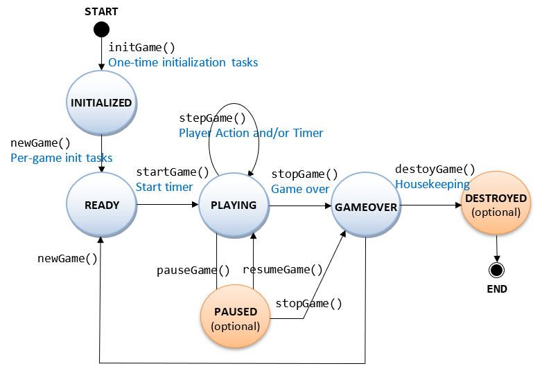
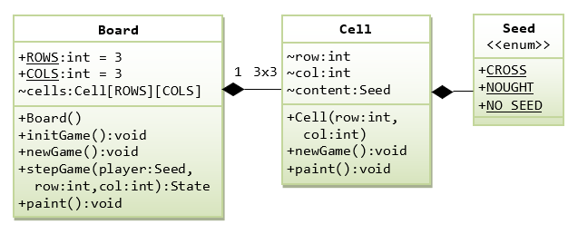
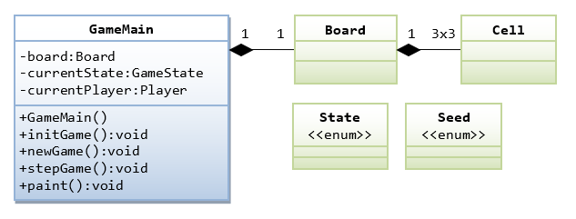
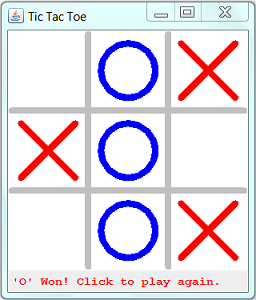
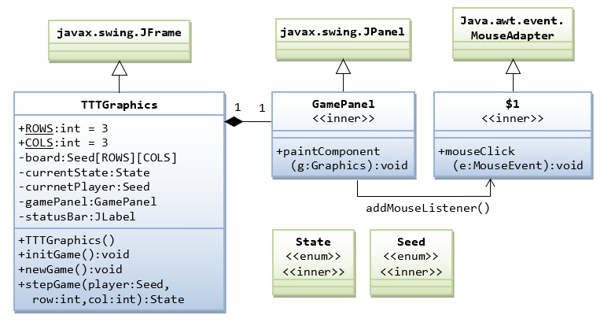
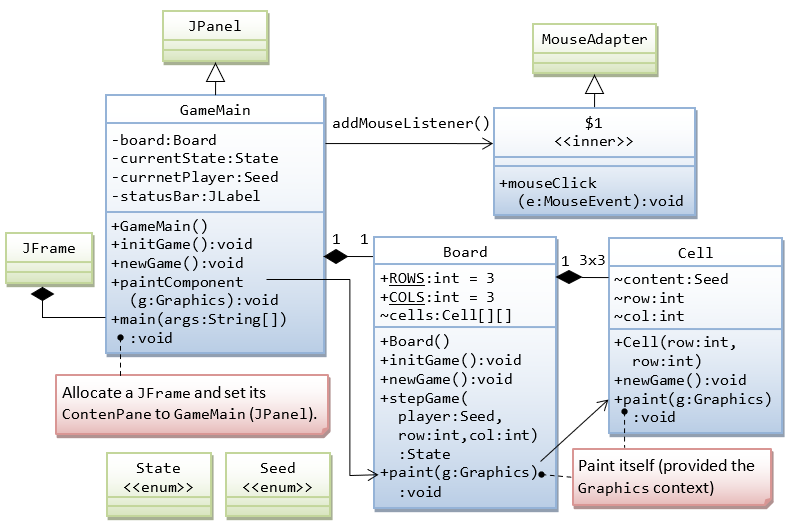
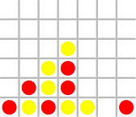
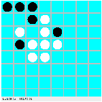

A game can be programmed as a finite state machine, with clearly defined states and state transition functions, as follows:
For this Tic-tac-toe, I shall try to closely follow this state diagram.
Let's Start with a 2-Player Console Non-OO Tic-Tac-Toe
Let us start with a 2-player console (non-graphics) version of Tic-Tac-Toe, where player 'X' and player 'O' enter their moves successively, as shown below:
Player 'X', enter your move (row[1-3] column[1-3]): 2 2
| |
-----------
| X |
-----------
| |
Player 'O', enter your move (row[1-3] column[1-3]): 1 1
O | |
-----------
| X |
-----------
| |
Player 'X', enter your move (row[1-3] column[1-3]): 1 3
O | | X
-----------
| X |
-----------
| |
Player 'O', enter your move (row[1-3] column[1-3]): 3 1
O | | X
-----------
| X |
-----------
O | |
Player 'X', enter your move (row[1-3] column[1-3]): 2 2
This move at (2,2) is not valid. Try again...
Player 'X', enter your move (row[1-3] column[1-3]): 2 3
O | | X
-----------
| X | X
-----------
O | |
Player 'O', enter your move (row[1-3] column[1-3]): 2 1
O | | X
-----------
O | X | X
-----------
O | |
Player 'O' won!
TTTConsoleNonOO.java
import java.util.Scanner;
/**
* Tic-Tac-Toe: Two-player, console-based, non-graphics, non-OO version.
* All variables/methods are declared as static (i.e., class)
* in this non-OO version.
*/
public class TTTConsoleNonOO {
// Define named constants for:
// 1. Player: using CROSS and NOUGHT
// 2. Cell contents: using CROSS, NOUGHT and NO_SEED
public static final int CROSS = 0;
public static final int NOUGHT = 1;
public static final int NO_SEED = 2;
// The game board
public static final int ROWS = 3, COLS = 3; // number of rows/columns
public static int[][] board = new int[ROWS][COLS]; // EMPTY, CROSS, NOUGHT
// The current player
public static int currentPlayer; // CROSS, NOUGHT
// Define named constants to represent the various states of the game
public static final int PLAYING = 0;
public static final int DRAW = 1;
public static final int CROSS_WON = 2;
public static final int NOUGHT_WON = 3;
// The current state of the game
public static int currentState;
public static Scanner in = new Scanner(System.in); // the input Scanner
/** The entry main method (the program starts here) */
public static void main(String[] args) {
// Initialize the board, currentState and currentPlayer
initGame();
// Play the game once
do {
// currentPlayer makes a move
// Update board[selectedRow][selectedCol] and currentState
stepGame();
// Refresh the display
paintBoard();
// Print message if game over
if (currentState == CROSS_WON) {
System.out.println("'X' won!\nBye!");
} else if (currentState == NOUGHT_WON) {
System.out.println("'O' won!\nBye!");
} else if (currentState == DRAW) {
System.out.println("It's a Draw!\nBye!");
}
// Switch currentPlayer
currentPlayer = (currentPlayer == CROSS) ? NOUGHT : CROSS;
} while (currentState == PLAYING); // repeat if not game over
}
/** Initialize the board[][], currentState and currentPlayer for a new game*/
public static void initGame() {
for (int row = 0; row < ROWS; ++row) {
for (int col = 0; col < COLS; ++col) {
board[row][col] = NO_SEED; // all cells empty
}
}
currentPlayer = CROSS; // cross plays first
currentState = PLAYING; // ready to play
}
/** The currentPlayer makes one move (one step).
Update board[selectedRow][selectedCol] and currentState. */
public static void stepGame() {
boolean validInput = false; // for input validation
do {
if (currentPlayer == CROSS) {
System.out.print("Player 'X', enter your move (row[1-3] column[1-3]): ");
} else {
System.out.print("Player 'O', enter your move (row[1-3] column[1-3]): ");
}
int row = in.nextInt() - 1; // array index starts at 0 instead of 1
int col = in.nextInt() - 1;
if (row >= 0 && row < ROWS && col >= 0 && col < COLS
&& board[row][col] == NO_SEED) {
// Update board[][] and return the new game state after the move
currentState = stepGameUpdate(currentPlayer, row, col);
validInput = true; // input okay, exit loop
} else {
System.out.println("This move at (" + (row + 1) + "," + (col + 1)
+ ") is not valid. Try again...");
}
} while (!validInput); // repeat if input is invalid
}
/**
* Helper function of stepGame().
* The given player makes a move at (selectedRow, selectedCol).
* Update board[selectedRow][selectedCol]. Compute and return the
* new game state (PLAYING, DRAW, CROSS_WON, NOUGHT_WON).
* @return new game state
*/
public static int stepGameUpdate(int player, int selectedRow, int selectedCol) {
// Update game board
board[selectedRow][selectedCol] = player;
// Compute and return the new game state
if (board[selectedRow][0] == player // 3-in-the-row
&& board[selectedRow][1] == player
&& board[selectedRow][2] == player
|| board[0][selectedCol] == player // 3-in-the-column
&& board[1][selectedCol] == player
&& board[2][selectedCol] == player
|| selectedRow == selectedCol // 3-in-the-diagonal
&& board[0][0] == player
&& board[1][1] == player
&& board[2][2] == player
|| selectedRow + selectedCol == 2 // 3-in-the-opposite-diagonal
&& board[0][2] == player
&& board[1][1] == player
&& board[2][0] == player) {
return (player == CROSS) ? CROSS_WON : NOUGHT_WON;
} else {
// Nobody win. Check for DRAW (all cells occupied) or PLAYING.
for (int row = 0; row < ROWS; ++row) {
for (int col = 0; col < COLS; ++col) {
if (board[row][col] == NO_SEED) {
return PLAYING; // still have empty cells
}
}
}
return DRAW; // no empty cell, it's a draw
}
}
/** Print the game board */
public static void paintBoard() {
for (int row = 0; row < ROWS; ++row) {
for (int col = 0; col < COLS; ++col) {
paintCell(board[row][col]); // print each of the cells
if (col != COLS - 1) {
System.out.print("|"); // print vertical partition
}
}
System.out.println();
if (row != ROWS - 1) {
System.out.println("-----------"); // print horizontal partition
}
}
System.out.println();
}
/** Print a cell having the given content */
public static void paintCell(int content) {
switch (content) {
case CROSS: System.out.print(" X "); break;
case NOUGHT: System.out.print(" O "); break;
case NO_SEED: System.out.print(" "); break;
}
}
}How it works?
Non-OO programs (like C programs) are organized in methods (or functions), which access common global variables. In non-OO Java, all the variables/methods shall be declared static (i.e., they belong to the class instead of instances). The program starts at the main() method. No instances are created.
A board game (such as Tic-tac-toe) is typically programmed as a state machine. Depending on the current-state and the player's move, the game transits into the next-state. In this example, I use a variable currentState to keep track of the current-state of the game, and define named constants to denote the various states of the game (PLAYING, DRAW, CROSS_WON, and NOUGHT_WON). A method called stepGame() is defined, which will be called to transit into next state.
Two methods are defined for printing the game board, paintBoard() and paintCell(). The paintBoard() shall call paintCell() to print each of the 9 cells. This seems trivial here, but will be useful in the object-oriented design to separate the board and cells into separate classes.
[TODO] more explanation
TRY: Prompt the user whether to play again after gameover.
// in main()
do {
// Play the game once
initGame();
......
......
// Prompt the user whether to play again
System.out.print("Play again (y/n)? ");
char ans = in.next().charAt(0);
if (ans != 'y' && ans != 'Y') {
System.out.println("Bye!");
System.exit(0); // terminate the program
}
} while (true); // repeat until user did not answer yesA Console OO Tic-Tac-Toe
Let us convert the earlier non-OO version of Tic-Tac-Toe to object-oriented. The OO version of this simple Tic-Tac-Toe is more complex than the non-OO version, because Tic-Tac-Toe is a rather simple application. But OO design is a necessity to build a complex application.
Enumeration State
In our earlier version, we used int named-constants to represent the various game states, as follows:
// Define named constants to represent the various states of the game
public static final int PLAYING = 0;
public static final int DRAW = 1;
public static final int CROSS_WON = 2;
public static final int NOUGHT_WON = 3;
// The current state of the game
public static int currentState = PLAYING; // Assigned to a named constant, which is easier to read
// and understand, instead of an int number 0This approach of using int named-constants is better than hardcoding the numbers in the programming statements, but it is not ideal. This is because you may inadvertently assign an int value outside the valid range to the variable currentState. For example,
currentState = 99; // A logical error but can compileJDK 5 introduces a new feature called enumeration, which is a special class for storing an enumeration (list) of fixed items. In our case, we can define an enumeration called State as follows:
/**
* The enum State defines the various game states of the TTT game
*/
public enum State { // to save as "State.java"
PLAYING, DRAW, CROSS_WON, NOUGHT_WON
}enum, use enumName.itemName (e.g., State.PLAYING and State.DRAW), just like referencing static variables of a class (e.g., Math.PI).
You can create an instance for an enum (just like creating an instance of a class) and assign a value into it. We shall now declare the variable currentState as an instance of State, which can take the value of State.PLAYING, State.DRAW, State.CROSS_WON, and State.NOUGHT_WON.
State currentState; // declare variable currentState as an instance of enum Game
currentState = State.PLAYING; // assign a value (an enum item) to the variable currentStateTake note that you can only assign a value defined in the enumeration (such as State.PLAYING, State.DRAW), and NOT an arbitrary int value in the earlier example. In other words, enum is SAFE!
Enumerations Seed
We shall also create an enum called Seed as follows.
/**
* This enum is used by:
* 1. Player: takes value of CROSS or NOUGHT
* 2. Cell content: takes value of CROSS, NOUGHT, or NO_SEED.
*
* We also attach a display icon (text or image) for each of the item,
* and define the related variable/constructor/getter.
*
* Ideally, we should define two enums with inheritance, which is,
* however, not supported.
*/
public enum Seed { // to save as "Seed.java"
CROSS("X"), NOUGHT("O"), NO_SEED(" ");
// Private variable
private String icon;
// Constructor (must be private)
private Seed(String icon) {
this.icon = icon;
}
// Public Getter
public String getIcon() {
return icon;
}
}This enum is used in two properties:
- Player: uses values
CROSSandNOUGHT. - Cell Content: uses values
CROSS,NOUGHT, andNO_SEED.
(Ideally, we should create 2 enums with inheritance, but enum inheritance is not supported in Java.)
Again, you need to use Seed.NO_SEED, Seed.CROSS, Seed.NOUGHT to refer to these values, just like any public static final constants.
We also attach an icon to each of the enum items, by defining a private variable, a private constructor and a public getter (as in a regular class). We can get the icon via enumItem.getIcon().
We shall declare the variables currentPlayer and content as instances of enum Player and CellContent.
private Seed currentPlayer; // declare variable currentPlayer as an instance of enum Seed
currentPlayer = Seed.CROSS; // assign a value (an enum item) to the variable currentPlayer
private Seed content; // cell's content
content = Seed.NO_SEED;In brief, an enum is just a special class with a list of named-constants. But enum is safe with additional features!
Classes Board and Cell
Next, let's design the OO classes needed for our Tic-Tac-Toe game. Each class shall maintain its own attributes and operations (variables and methods), and it can paint itself in a graphics program.
We begin with two classes, a class Cell for each individual cell of the game board, and a class Board for the 3x3 game board.
The Cell class has an instance variable called content (with package access), of the type enum Seed. You can only assign a value from the enum's constants, such as Seed.NO_SEED, Seed.CROSS, and Seed.NOUGHT, into content. A Cell can paint() itself. You can use newGame() to reset all its properties, ready for a new game.
The Board class composes of nine Cell instances, arranged in an 3×3 array called cells (with package access), of the type Cell[][]. A Board can paint() itself, and supports the state transition functions such as initGame(), newGame() and stepGame() (see game state diagram).
Cell.java
/**
* The Cell class models each individual cell of the TTT 3x3 grid.
*/
public class Cell { // save as "Cell.java"
// Define properties (package-visible)
/** Content of this cell (CROSS, NOUGHT, NO_SEED) */
Seed content;
/** Row and column of this cell, not used in this program */
int row, col;
/** Constructor to initialize this cell */
public Cell(int row, int col) {
this.row = row;
this.col = col;
this.content = Seed.NO_SEED;
}
/** Reset the cell content to EMPTY, ready for a new game. */
public void newGame() {
this.content = Seed.NO_SEED;
}
/** The cell paints itself */
public void paint() {
// Retrieve the display icon (text) and print
String icon = this.content.getIcon();
System.out.print(icon);
}
}Board.java
/**
* The Board class models the TTT game-board of 3x3 cells.
*/
public class Board { // save as "Board.java"
// Define named constants for the grid
public static final int ROWS = 3;
public static final int COLS = 3;
// Define properties (package-visible)
/** A board composes of [ROWS]x[COLS] Cell instances */
Cell[][] cells;
/** Constructor to initialize the game board */
public Board() {
initGame();
}
/** Initialize the board (run once) */
public void initGame() {
cells = new Cell[ROWS][COLS]; // allocate the array
for (int row = 0; row < ROWS; ++row) {
for (int col = 0; col < COLS; ++col) {
// Allocate element of the array
cells[row][col] = new Cell(row, col);
}
}
}
/** Reset the contents of the game board, ready for new game. */
public void newGame() {
for (int row = 0; row < ROWS; ++row) {
for (int col = 0; col < COLS; ++col) {
cells[row][col].newGame(); // The cells init itself
}
}
}
/**
* The given player makes a move on (selectedRow, selectedCol).
* Update cells[selectedRow][selectedCol]. Compute and return the
* new game state (PLAYING, DRAW, CROSS_WON, NOUGHT_WON).
*/
public State stepGame(Seed player, int selectedRow, int selectedCol) {
// Update game board
cells[selectedRow][selectedCol].content = player;
// Compute and return the new game state
if (cells[selectedRow][0].content == player // 3-in-the-row
&& cells[selectedRow][1].content == player
&& cells[selectedRow][2].content == player
|| cells[0][selectedCol].content == player // 3-in-the-column
&& cells[1][selectedCol].content == player
&& cells[2][selectedCol].content == player
|| selectedRow == selectedCol // 3-in-the-diagonal
&& cells[0][0].content == player
&& cells[1][1].content == player
&& cells[2][2].content == player
|| selectedRow + selectedCol == 2 // 3-in-the-opposite-diagonal
&& cells[0][2].content == player
&& cells[1][1].content == player
&& cells[2][0].content == player) {
return (player == Seed.CROSS) ? State.CROSS_WON : State.NOUGHT_WON;
} else {
// Nobody win. Check for DRAW (all cells occupied) or PLAYING.
for (int row = 0; row < ROWS; ++row) {
for (int col = 0; col < COLS; ++col) {
if (cells[row][col].content == Seed.NO_SEED) {
return State.PLAYING; // still have empty cells
}
}
}
return State.DRAW; // no empty cell, it's a draw
}
}
/** The board paints itself */
public void paint() {
for (int row = 0; row < ROWS; ++row) {
for (int col = 0; col < COLS; ++col) {
System.out.print(" ");
cells[row][col].paint(); // each cell paints itself
System.out.print(" ");
if (col < COLS - 1) System.out.print("|"); // column separator
}
System.out.println();
if (row < ROWS - 1) {
System.out.println("-----------"); // row separator
}
}
System.out.println();
}
}Class GameMain
Finally, let's write a main class called GameMain to pull all the pieces together. GameMain acts as the overall controller for the game.
GameMain.java
import java.util.Scanner;
/**
* The main class for the Tic-Tac-Toe (Console-OO, non-graphics version)
* It acts as the overall controller of the game.
*/
public class GameMain {
// Define properties
/** The game board */
private Board board;
/** The current state of the game (of enum State) */
private State currentState;
/** The current player (of enum Seed) */
private Seed currentPlayer;
private static Scanner in = new Scanner(System.in);
/** Constructor to setup the game */
public GameMain() {
// Perform one-time initialization tasks
initGame();
// Reset the board, currentStatus and currentPlayer
newGame();
// Play the game once
do {
// The currentPlayer makes a move.
// Update cells[][] and currentState
stepGame();
// Refresh the display
board.paint();
// Print message if game over
if (currentState == State.CROSS_WON) {
System.out.println("'X' won!\nBye!");
} else if (currentState == State.NOUGHT_WON) {
System.out.println("'O' won!\nBye!");
} else if (currentState == State.DRAW) {
System.out.println("It's Draw!\nBye!");
}
// Switch currentPlayer
currentPlayer = (currentPlayer == Seed.CROSS) ? Seed.NOUGHT : Seed.CROSS;
} while (currentState == State.PLAYING); // repeat until game over
}
/** Perform one-time initialization tasks */
public void initGame() {
board = new Board(); // allocate game-board
}
/** Reset the game-board contents and the current states, ready for new game */
public void newGame() {
board.newGame(); // clear the board contents
currentPlayer = Seed.CROSS; // CROSS plays first
currentState = State.PLAYING; // ready to play
}
/** The currentPlayer makes one move.
Update cells[][] and currentState. */
public void stepGame() {
boolean validInput = false; // for validating input
do {
String icon = currentPlayer.getIcon();
System.out.print("Player '" + icon + "', enter your move (row[1-3] column[1-3]): ");
int row = in.nextInt() - 1; // [0-2]
int col = in.nextInt() - 1;
if (row >= 0 && row < Board.ROWS && col >= 0 && col < Board.COLS
&& board.cells[row][col].content == Seed.NO_SEED) {
// Update cells[][] and return the new game state after the move
currentState = board.stepGame(currentPlayer, row, col);
validInput = true; // input okay, exit loop
} else {
System.out.println("This move at (" + (row + 1) + "," + (col + 1)
+ ") is not valid. Try again...");
}
} while (!validInput); // repeat until input is valid
}
/** The entry main() method */
public static void main(String[] args) {
new GameMain(); // Let the constructor do the job
}
}OO vs non-OO
The OO-version and the non-OO version have the same codes, but are organized differently. The organization in OO enables you to design and develop complex system.
A Graphical Tic-Tac-Toe with Simple-OO
Let's rewrite the "console" version into a "graphics" version - a Java Swing application, as illustrated. In this initial design, we do not separate the cell and board into dedicated classes, but include them in the main class. We used an inner class GamePanel (that extends JPanel) to do the custom drawing, and an anonymous inner class for MouseListener.
The content-pane (of the top-level container JFrame) is set to BorderLayout. The DrawCanvas (JPanel) is placed at the CENTER; while a status-bar (a JLabel) is placed at the SOUTH (PAGE_END).
The class diagram is as follows:
TTTGraphics.java
import java.awt.*;
import java.awt.event.*;
import javax.swing.*;
/**
* Tic-Tac-Toe: Two-player Graphics version with Simple-OO in one class
*/
public class TTTGraphics extends JFrame {
private static final long serialVersionUID = 1L; // to prevent serializable warning
// Define named constants for the game board
public static final int ROWS = 3; // ROWS x COLS cells
public static final int COLS = 3;
// Define named constants for the drawing graphics
public static final int CELL_SIZE = 120; // cell width/height (square)
public static final int BOARD_WIDTH = CELL_SIZE * COLS; // the drawing canvas
public static final int BOARD_HEIGHT = CELL_SIZE * ROWS;
public static final int GRID_WIDTH = 10; // Grid-line's width
public static final int GRID_WIDTH_HALF = GRID_WIDTH / 2;
// Symbols (cross/nought) are displayed inside a cell, with padding from border
public static final int CELL_PADDING = CELL_SIZE / 5;
public static final int SYMBOL_SIZE = CELL_SIZE - CELL_PADDING * 2; // width/height
public static final int SYMBOL_STROKE_WIDTH = 8; // pen's stroke width
public static final Color COLOR_BG = Color.WHITE; // background
public static final Color COLOR_BG_STATUS = new Color(216, 216, 216);
public static final Color COLOR_GRID = Color.LIGHT_GRAY; // grid lines
public static final Color COLOR_CROSS = new Color(211, 45, 65); // Red #D32D41
public static final Color COLOR_NOUGHT = new Color(76, 181, 245); // Blue #4CB5F5
public static final Font FONT_STATUS = new Font("OCR A Extended", Font.PLAIN, 14);
// This enum (inner class) contains the various states of the game
public enum State {
PLAYING, DRAW, CROSS_WON, NOUGHT_WON
}
private State currentState; // the current game state
// This enum (inner class) is used for:
// 1. Player: CROSS, NOUGHT
// 2. Cell's content: CROSS, NOUGHT and NO_SEED
public enum Seed {
CROSS, NOUGHT, NO_SEED
}
private Seed currentPlayer; // the current player
private Seed[][] board; // Game board of ROWS-by-COLS cells
// UI Components
private GamePanel gamePanel; // Drawing canvas (JPanel) for the game board
private JLabel statusBar; // Status Bar
/** Constructor to setup the game and the GUI components */
public TTTGraphics() {
// Initialize the game objects
initGame();
// Set up GUI components
gamePanel = new GamePanel(); // Construct a drawing canvas (a JPanel)
gamePanel.setPreferredSize(new Dimension(BOARD_WIDTH, BOARD_HEIGHT));
// The canvas (JPanel) fires a MouseEvent upon mouse-click
gamePanel.addMouseListener(new MouseAdapter() {
@Override
public void mouseClicked(MouseEvent e) { // mouse-clicked handler
int mouseX = e.getX();
int mouseY = e.getY();
// Get the row and column clicked
int row = mouseY / CELL_SIZE;
int col = mouseX / CELL_SIZE;
if (currentState == State.PLAYING) {
if (row >= 0 && row < ROWS && col >= 0
&& col < COLS && board[row][col] == Seed.NO_SEED) {
// Update board[][] and return the new game state after the move
currentState = stepGame(currentPlayer, row, col);
// Switch player
currentPlayer = (currentPlayer == Seed.CROSS) ? Seed.NOUGHT : Seed.CROSS;
}
} else { // game over
newGame(); // restart the game
}
// Refresh the drawing canvas
repaint(); // Callback paintComponent().
}
});
// Setup the status bar (JLabel) to display status message
statusBar = new JLabel(" ");
statusBar.setFont(FONT_STATUS);
statusBar.setBorder(BorderFactory.createEmptyBorder(5, 10, 5, 12));
statusBar.setOpaque(true);
statusBar.setBackground(COLOR_BG_STATUS);
// Set up content pane
Container cp = getContentPane();
cp.setLayout(new BorderLayout());
cp.add(gamePanel, BorderLayout.CENTER);
cp.add(statusBar, BorderLayout.PAGE_END); // same as SOUTH
setDefaultCloseOperation(JFrame.EXIT_ON_CLOSE);
pack(); // pack all the components in this JFrame
setTitle("Tic Tac Toe");
setVisible(true); // show this JFrame
newGame();
}
/** Initialize the Game (run once) */
public void initGame() {
board = new Seed[ROWS][COLS]; // allocate array
}
/** Reset the game-board contents and the status, ready for new game */
public void newGame() {
for (int row = 0; row < ROWS; ++row) {
for (int col = 0; col < COLS; ++col) {
board[row][col] = Seed.NO_SEED; // all cells empty
}
}
currentPlayer = Seed.CROSS; // cross plays first
currentState = State.PLAYING; // ready to play
}
/**
* The given player makes a move on (selectedRow, selectedCol).
* Update cells[selectedRow][selectedCol]. Compute and return the
* new game state (PLAYING, DRAW, CROSS_WON, NOUGHT_WON).
*/
public State stepGame(Seed player, int selectedRow, int selectedCol) {
// Update game board
board[selectedRow][selectedCol] = player;
// Compute and return the new game state
if (board[selectedRow][0] == player // 3-in-the-row
&& board[selectedRow][1] == player
&& board[selectedRow][2] == player
|| board[0][selectedCol] == player // 3-in-the-column
&& board[1][selectedCol] == player
&& board[2][selectedCol] == player
|| selectedRow == selectedCol // 3-in-the-diagonal
&& board[0][0] == player
&& board[1][1] == player
&& board[2][2] == player
|| selectedRow + selectedCol == 2 // 3-in-the-opposite-diagonal
&& board[0][2] == player
&& board[1][1] == player
&& board[2][0] == player) {
return (player == Seed.CROSS) ? State.CROSS_WON : State.NOUGHT_WON;
} else {
// Nobody win. Check for DRAW (all cells occupied) or PLAYING.
for (int row = 0; row < ROWS; ++row) {
for (int col = 0; col < COLS; ++col) {
if (board[row][col] == Seed.NO_SEED) {
return State.PLAYING; // still have empty cells
}
}
}
return State.DRAW; // no empty cell, it's a draw
}
}
/**
* Inner class DrawCanvas (extends JPanel) used for custom graphics drawing.
*/
class GamePanel extends JPanel {
private static final long serialVersionUID = 1L; // to prevent serializable warning
@Override
public void paintComponent(Graphics g) { // Callback via repaint()
super.paintComponent(g);
setBackground(COLOR_BG); // set its background color
// Draw the grid lines
g.setColor(COLOR_GRID);
for (int row = 1; row < ROWS; ++row) {
g.fillRoundRect(0, CELL_SIZE * row - GRID_WIDTH_HALF,
BOARD_WIDTH-1, GRID_WIDTH, GRID_WIDTH, GRID_WIDTH);
}
for (int col = 1; col < COLS; ++col) {
g.fillRoundRect(CELL_SIZE * col - GRID_WIDTH_HALF, 0,
GRID_WIDTH, BOARD_HEIGHT-1, GRID_WIDTH, GRID_WIDTH);
}
// Draw the Seeds of all the cells if they are not empty
// Use Graphics2D which allows us to set the pen's stroke
Graphics2D g2d = (Graphics2D)g;
g2d.setStroke(new BasicStroke(SYMBOL_STROKE_WIDTH,
BasicStroke.CAP_ROUND, BasicStroke.JOIN_ROUND));
for (int row = 0; row < ROWS; ++row) {
for (int col = 0; col < COLS; ++col) {
int x1 = col * CELL_SIZE + CELL_PADDING;
int y1 = row * CELL_SIZE + CELL_PADDING;
if (board[row][col] == Seed.CROSS) { // draw a 2-line cross
g2d.setColor(COLOR_CROSS);
int x2 = (col + 1) * CELL_SIZE - CELL_PADDING;
int y2 = (row + 1) * CELL_SIZE - CELL_PADDING;
g2d.drawLine(x1, y1, x2, y2);
g2d.drawLine(x2, y1, x1, y2);
} else if (board[row][col] == Seed.NOUGHT) { // draw a circle
g2d.setColor(COLOR_NOUGHT);
g2d.drawOval(x1, y1, SYMBOL_SIZE, SYMBOL_SIZE);
}
}
}
// Print status message
if (currentState == State.PLAYING) {
statusBar.setForeground(Color.BLACK);
statusBar.setText((currentPlayer == Seed.CROSS) ? "X's Turn" : "O's Turn");
} else if (currentState == State.DRAW) {
statusBar.setForeground(Color.RED);
statusBar.setText("It's a Draw! Click to play again");
} else if (currentState == State.CROSS_WON) {
statusBar.setForeground(Color.RED);
statusBar.setText("'X' Won! Click to play again");
} else if (currentState == State.NOUGHT_WON) {
statusBar.setForeground(Color.RED);
statusBar.setText("'O' Won! Click to play again");
}
}
}
/** The entry main() method */
public static void main(String[] args) {
// Run GUI codes in the Event-Dispatching thread for thread safety
SwingUtilities.invokeLater(new Runnable() {
@Override
public void run() {
new TTTGraphics(); // Let the constructor do the job
}
});
}
}How it Works?
[TODO]
A Graphical Tic-Tac-Toe with OO Design
In a good OO design, each class shall be encapsulated, shall have its own attributes and operations (variables and methods), and responsible for painting itself in a graphics program.
The class diagram is as follows:
Enumeration Seed.java
/**
* This enum is used by:
* 1. Player: takes value of CROSS or NOUGHT
* 2. Cell content: takes value of CROSS, NOUGHT, or NO_SEED.
*
* Ideally, we should define two enums with inheritance, which is,
* however, not supported.
*/
public enum Seed { // to save as "Seed.java"
CROSS, NOUGHT, NO_SEED
}Enumeration State.java
/**
* The enum State contains the various game states of the TTT game
*/
public enum State { // to save as "State.java"
PLAYING, DRAW, CROSS_WON, NOUGHT_WON
}Class Cell.java
import java.awt.*;
/**
* The Cell class models each individual cell of the game board.
*/
public class Cell {
// Define named constants for drawing
public static final int SIZE = 120; // cell width/height (square)
// Symbols (cross/nought) are displayed inside a cell, with padding from border
public static final int PADDING = SIZE / 5;
public static final int SEED_SIZE = SIZE - PADDING * 2;
public static final int SEED_STROKE_WIDTH = 8; // pen's stroke width
// Define properties (package-visible)
/** Content of this cell (Seed.EMPTY, Seed.CROSS, or Seed.NOUGHT) */
Seed content;
/** Row and column of this cell */
int row, col;
/** Constructor to initialize this cell with the specified row and col */
public Cell(int row, int col) {
this.row = row;
this.col = col;
content = Seed.NO_SEED;
}
/** Reset this cell's content to EMPTY, ready for new game */
public void newGame() {
content = Seed.NO_SEED;
}
/** Paint itself on the graphics canvas, given the Graphics context */
public void paint(Graphics g) {
// Use Graphics2D which allows us to set the pen's stroke
Graphics2D g2d = (Graphics2D)g;
g2d.setStroke(new BasicStroke(SEED_STROKE_WIDTH,
BasicStroke.CAP_ROUND, BasicStroke.JOIN_ROUND));
// Draw the Seed if it is not empty
int x1 = col * SIZE + PADDING;
int y1 = row * SIZE + PADDING;
if (content == Seed.CROSS) {
g2d.setColor(GameMain.COLOR_CROSS); // draw a 2-line cross
int x2 = (col + 1) * SIZE - PADDING;
int y2 = (row + 1) * SIZE - PADDING;
g2d.drawLine(x1, y1, x2, y2);
g2d.drawLine(x2, y1, x1, y2);
} else if (content == Seed.NOUGHT) { // draw a circle
g2d.setColor(GameMain.COLOR_NOUGHT);
g2d.drawOval(x1, y1, SEED_SIZE, SEED_SIZE);
}
}
}Class Board.java
import java.awt.*;
/**
* The Board class models the ROWS-by-COLS game board.
*/
public class Board {
// Define named constants
public static final int ROWS = 3; // ROWS x COLS cells
public static final int COLS = 3;
// Define named constants for drawing
public static final int CANVAS_WIDTH = Cell.SIZE * COLS; // the drawing canvas
public static final int CANVAS_HEIGHT = Cell.SIZE * ROWS;
public static final int GRID_WIDTH = 8; // Grid-line's width
public static final int GRID_WIDTH_HALF = GRID_WIDTH / 2; // Grid-line's half-width
public static final Color COLOR_GRID = Color.LIGHT_GRAY; // grid lines
public static final int Y_OFFSET = 1; // Fine tune for better display
// Define properties (package-visible)
/** Composes of 2D array of ROWS-by-COLS Cell instances */
Cell[][] cells;
/** Constructor to initialize the game board */
public Board() {
initGame();
}
/** Initialize the game objects (run once) */
public void initGame() {
cells = new Cell[ROWS][COLS]; // allocate the array
for (int row = 0; row < ROWS; ++row) {
for (int col = 0; col < COLS; ++col) {
// Allocate element of the array
cells[row][col] = new Cell(row, col);
// Cells are initialized in the constructor
}
}
}
/** Reset the game board, ready for new game */
public void newGame() {
for (int row = 0; row < ROWS; ++row) {
for (int col = 0; col < COLS; ++col) {
cells[row][col].newGame(); // clear the cell content
}
}
}
/**
* The given player makes a move on (selectedRow, selectedCol).
* Update cells[selectedRow][selectedCol]. Compute and return the
* new game state (PLAYING, DRAW, CROSS_WON, NOUGHT_WON).
*/
public State stepGame(Seed player, int selectedRow, int selectedCol) {
// Update game board
cells[selectedRow][selectedCol].content = player;
// Compute and return the new game state
if (cells[selectedRow][0].content == player // 3-in-the-row
&& cells[selectedRow][1].content == player
&& cells[selectedRow][2].content == player
|| cells[0][selectedCol].content == player // 3-in-the-column
&& cells[1][selectedCol].content == player
&& cells[2][selectedCol].content == player
|| selectedRow == selectedCol // 3-in-the-diagonal
&& cells[0][0].content == player
&& cells[1][1].content == player
&& cells[2][2].content == player
|| selectedRow + selectedCol == 2 // 3-in-the-opposite-diagonal
&& cells[0][2].content == player
&& cells[1][1].content == player
&& cells[2][0].content == player) {
return (player == Seed.CROSS) ? State.CROSS_WON : State.NOUGHT_WON;
} else {
// Nobody win. Check for DRAW (all cells occupied) or PLAYING.
for (int row = 0; row < ROWS; ++row) {
for (int col = 0; col < COLS; ++col) {
if (cells[row][col].content == Seed.NO_SEED) {
return State.PLAYING; // still have empty cells
}
}
}
return State.DRAW; // no empty cell, it's a draw
}
}
/** Paint itself on the graphics canvas, given the Graphics context */
public void paint(Graphics g) {
// Draw the grid-lines
g.setColor(COLOR_GRID);
for (int row = 1; row < ROWS; ++row) {
g.fillRoundRect(0, Cell.SIZE * row - GRID_WIDTH_HALF,
CANVAS_WIDTH - 1, GRID_WIDTH,
GRID_WIDTH, GRID_WIDTH);
}
for (int col = 1; col < COLS; ++col) {
g.fillRoundRect(Cell.SIZE * col - GRID_WIDTH_HALF, 0 + Y_OFFSET,
GRID_WIDTH, CANVAS_HEIGHT - 1,
GRID_WIDTH, GRID_WIDTH);
}
// Draw all the cells
for (int row = 0; row < ROWS; ++row) {
for (int col = 0; col < COLS; ++col) {
cells[row][col].paint(g); // ask the cell to paint itself
}
}
}
}Classes GameMain.java
For better flexibility, we shall extend ths main class from JPanel (instead of JFrame); allocate a JFrame in main(); and set this as the contentPane of the JFrame.
import java.awt.*;
import java.awt.event.*;
import javax.swing.*;
/**
* Tic-Tac-Toe: Two-player Graphic version with better OO design.
* The Board and Cell classes are separated in their own classes.
*/
public class GameMain extends JPanel {
private static final long serialVersionUID = 1L; // to prevent serializable warning
// Define named constants for the drawing graphics
public static final String TITLE = "Tic Tac Toe";
public static final Color COLOR_BG = Color.WHITE;
public static final Color COLOR_BG_STATUS = new Color(216, 216, 216);
public static final Color COLOR_CROSS = new Color(239, 105, 80); // Red #EF6950
public static final Color COLOR_NOUGHT = new Color(64, 154, 225); // Blue #409AE1
public static final Font FONT_STATUS = new Font("OCR A Extended", Font.PLAIN, 14);
// Define game objects
private Board board; // the game board
private State currentState; // the current state of the game
private Seed currentPlayer; // the current player
private JLabel statusBar; // for displaying status message
/** Constructor to setup the UI and game components */
public GameMain() {
// This JPanel fires MouseEvent
super.addMouseListener(new MouseAdapter() {
@Override
public void mouseClicked(MouseEvent e) { // mouse-clicked handler
int mouseX = e.getX();
int mouseY = e.getY();
// Get the row and column clicked
int row = mouseY / Cell.SIZE;
int col = mouseX / Cell.SIZE;
if (currentState == State.PLAYING) {
if (row >= 0 && row < Board.ROWS && col >= 0 && col < Board.COLS
&& board.cells[row][col].content == Seed.NO_SEED) {
// Update cells[][] and return the new game state after the move
currentState = board.stepGame(currentPlayer, row, col);
// Switch player
currentPlayer = (currentPlayer == Seed.CROSS) ? Seed.NOUGHT : Seed.CROSS;
}
} else { // game over
newGame(); // restart the game
}
// Refresh the drawing canvas
repaint(); // Callback paintComponent().
}
});
// Setup the status bar (JLabel) to display status message
statusBar = new JLabel();
statusBar.setFont(FONT_STATUS);
statusBar.setBackground(COLOR_BG_STATUS);
statusBar.setOpaque(true);
statusBar.setPreferredSize(new Dimension(300, 30));
statusBar.setHorizontalAlignment(JLabel.LEFT);
statusBar.setBorder(BorderFactory.createEmptyBorder(5, 10, 5, 12));
super.setLayout(new BorderLayout());
super.add(statusBar, BorderLayout.PAGE_END); // same as SOUTH
super.setPreferredSize(new Dimension(Board.CANVAS_WIDTH, Board.CANVAS_HEIGHT + 30));
// account for statusBar in height
super.setBorder(BorderFactory.createLineBorder(COLOR_BG_STATUS, 2, false));
// Set up Game
initGame();
newGame();
}
/** Initialize the game (run once) */
public void initGame() {
board = new Board(); // allocate the game-board
}
/** Reset the game-board contents and the current-state, ready for new game */
public void newGame() {
for (int row = 0; row < Board.ROWS; ++row) {
for (int col = 0; col < Board.COLS; ++col) {
board.cells[row][col].content = Seed.NO_SEED; // all cells empty
}
}
currentPlayer = Seed.CROSS; // cross plays first
currentState = State.PLAYING; // ready to play
}
/** Custom painting codes on this JPanel */
@Override
public void paintComponent(Graphics g) { // Callback via repaint()
super.paintComponent(g);
setBackground(COLOR_BG); // set its background color
board.paint(g); // ask the game board to paint itself
// Print status-bar message
if (currentState == State.PLAYING) {
statusBar.setForeground(Color.BLACK);
statusBar.setText((currentPlayer == Seed.CROSS) ? "X's Turn" : "O's Turn");
} else if (currentState == State.DRAW) {
statusBar.setForeground(Color.RED);
statusBar.setText("It's a Draw! Click to play again.");
} else if (currentState == State.CROSS_WON) {
statusBar.setForeground(Color.RED);
statusBar.setText("'X' Won! Click to play again.");
} else if (currentState == State.NOUGHT_WON) {
statusBar.setForeground(Color.RED);
statusBar.setText("'O' Won! Click to play again.");
}
}
/** The entry "main" method */
public static void main(String[] args) {
// Run GUI construction codes in Event-Dispatching thread for thread safety
javax.swing.SwingUtilities.invokeLater(new Runnable() {
public void run() {
JFrame frame = new JFrame(TITLE);
// Set the content-pane of the JFrame to an instance of main JPanel
frame.setContentPane(new GameMain());
frame.setDefaultCloseOperation(JFrame.EXIT_ON_CLOSE);
frame.pack();
frame.setLocationRelativeTo(null); // center the application window
frame.setVisible(true); // show it
}
});
}
}How it Works?
[TODO]
Running as a Standalone Program
Simply run the class containing the entry main() method.
Deploying an Application via a JAR file
To deploy an application containing many classes, you have to pack (i.e., jar) all classes and resources into a single file, with a manifest that specifies the main class (containing the entry main() method).
For example:
- via the Eclipse's "Export" option: Right-click on the project ⇒ Export ⇒ Java ⇒ JAR file ⇒ Next ⇒ Specify the JAR filename ⇒ Next ⇒ Next ⇒ Select "Generate the manifest file" ⇒ Browse to select the main class "
GameMain" ⇒ Finish. - via the "
jar" command.
First, create a manifest file called "tictactoe.mf", as follow:
Next, issue a "Manifest-Version: 1.0 Main-Class: GameMainjar" command (form CMD/Terminal shell) where options'c'for create,'m'for manifest,'f'for output jar filename, and'v'for verbose:jar cmfv tictactoe.mf tictactoe.jar *.class
You can run the program from a JAR file directly (without unpacking the JAR file) by:
- In Windows' Explorer, right-click on the JAR file ⇒ Open with ⇒ Java Platform SE Binary; or
- From the CMD/Terminal shell, run
java.exewith-jaroption, i.e.,java -jar JarFilename.jar
Note: JAR file uses the ZIP algorithm. In other words, you could use WinZIP/7-Zip to open and extract the contents of a JAR file.
Running as an Applet (Obsolete)
Note: Applet is no longer supported on browser! I nostalgically keep this section.
AppletMain.java
Provide a main class (says AppletMain.java) for the applet that extends javax.swing.JApplet:
import javax.swing.*;
/** Tic-tac-toe Applet */
@SuppressWarnings("serial")
public class AppletMain extends JApplet {
/** init() to setup the GUI components */
@Override
public void init() {
// Run GUI codes in the Event-Dispatching thread for thread safety
try {
// Use invokeAndWait() to ensure that init() exits after GUI construction
SwingUtilities.invokeAndWait(new Runnable() {
@Override
public void run() {
setContentPane(new GameMain());
}
});
} catch (Exception e) {
e.printStackTrace();
}
}
}TicTacToe.html
Provide an HTML file (says "TicTacToe.html") that embeds the "AppletMain.class":
<html>
<head>
<title>Tic Tac Toe</title>
</head>
<body>
<h1>Tic Tac Toe</h1>
<applet code="AppletMain.class" width="300" height="330" alt="Error Loading Applet?!">
Your browser does not seem to support <APPLET> tag!
</applet>
</body>
</html>tictactoe.jar
To deploy an applet which contains more than one classes, you need to pack all the classes and resources into a JAR file (e.g., via Eclipse's "Export" option or "jar" command described earlier), but you need not use a manifest (for specify a main class as applet does not need a main() method). Then, use the following <applet> tag with an "archive" attribute to specify the JAR filename:
<applet code="AppletMain.class"
archive="JarFileName.jar"
width="300" height="300"
alt="Error Loading Applet?!" >
Your browser does not seem to support <APPLET> tag!
</applet>A Graphical Tic-Tac-Toe with Sound Effect and Images
Read "Using Images and Audio".
Where to keep the image and audio files?
For Eclipse, create folders called "images" and "audio" under "src", and copy/paste the files there. These folders/files will be duplicated under the "bin" for execution.
SoundEffect.java
import java.io.IOException;
import java.net.URL;
import javax.sound.sampled.AudioInputStream;
import javax.sound.sampled.AudioSystem;
import javax.sound.sampled.Clip;
import javax.sound.sampled.LineUnavailableException;
import javax.sound.sampled.UnsupportedAudioFileException;
/**
* This enum encapsulates all the sound effects of a game, so as to separate the sound playing
* codes from the game codes.
* 1. Define all your sound effect names and the associated wave file.
* 2. To play a specific sound, simply invoke SoundEffect.SOUND_NAME.play().
* 3. You might optionally invoke the static method SoundEffect.initGame() to pre-load all the
* sound files, so that the play is not paused while loading the file for the first time.
* 4. You can the static variable SoundEffect.volume to SoundEffect.Volume.MUTE
* to mute the sound.
*
* For Eclipse, place the audio file under "src", which will be copied into "bin".
*/
public enum SoundEffect {
EAT_FOOD("audio/eatfood.wav"),
EXPLODE("audio/explode.wav"),
DIE("audio/die.wav");
/** Nested enumeration for specifying volume */
public static enum Volume {
MUTE, LOW, MEDIUM, HIGH
}
public static Volume volume = Volume.LOW;
/** Each sound effect has its own clip, loaded with its own sound file. */
private Clip clip;
/** Private Constructor to construct each element of the enum with its own sound file. */
private SoundEffect(String soundFileName) {
try {
// Use URL (instead of File) to read from disk and JAR.
URL url = this.getClass().getClassLoader().getResource(soundFileName);
// Set up an audio input stream piped from the sound file.
AudioInputStream audioInputStream = AudioSystem.getAudioInputStream(url);
// Get a clip resource.
clip = AudioSystem.getClip();
// Open audio clip and load samples from the audio input stream.
clip.open(audioInputStream);
} catch (UnsupportedAudioFileException e) {
e.printStackTrace();
} catch (IOException e) {
e.printStackTrace();
} catch (LineUnavailableException e) {
e.printStackTrace();
}
}
/** Play or Re-play the sound effect from the beginning, by rewinding. */
public void play() {
if (volume != Volume.MUTE) {
if (clip.isRunning())
clip.stop(); // Stop the player if it is still running
clip.setFramePosition(0); // rewind to the beginning
clip.start(); // Start playing
}
}
/** Optional static method to pre-load all the sound files. */
static void initGame() {
values(); // calls the constructor for all the elements
}
}Enumeration State.java
Save as above
Enumeration Seed.java
import java.awt.Image;
import java.net.URL;
import javax.swing.ImageIcon;
/**
* This enum is used by:
* 1. Player: takes value of CROSS or NOUGHT
* 2. Cell content: takes value of CROSS, NOUGHT, or NO_SEED.
*
* We also attach a display image icon (text or image) for the items.
* and define the related variable/constructor/getter.
* To draw the image:
* g.drawImage(content.getImage(), x, y, width, height, null);
*
* Ideally, we should define two enums with inheritance, which is,
* however, not supported.
*/
public enum Seed { // to save as "Seed.java"
CROSS("X", "images/cross.gif"), // displayName, imageFilename
NOUGHT("O", "images/not.gif"),
NO_SEED(" ", null);
// Private variables
private String displayName;
private Image img = null;
// Constructor (must be private)
private Seed(String name, String imageFilename) {
this.displayName = name;
if (imageFilename != null) {
URL imgURL = getClass().getClassLoader().getResource(imageFilename);
ImageIcon icon = null;
if (imgURL != null) {
icon = new ImageIcon(imgURL);
//System.out.println(icon); // debugging
} else {
System.err.println("Couldn't find file " + imageFilename);
}
img = icon.getImage();
}
}
// Public getters
public String getDisplayName() {
return displayName;
}
public Image getImage() {
return img;
}
}Cell.java
import java.awt.*;
/**
* The Cell class models each individual cell of the game board.
*/
public class Cell {
// Define named constants for drawing
public static final int SIZE = 120; // cell width/height (square)
// Symbols (cross/nought) are displayed inside a cell, with padding from border
public static final int PADDING = SIZE / 5;
public static final int SEED_SIZE = SIZE - PADDING * 2;
// Define properties (package-visible)
/** Content of this cell (Seed.EMPTY, Seed.CROSS, or Seed.NOUGHT) */
Seed content;
/** Row and column of this cell */
int row, col;
/** Constructor to initialize this cell with the specified row and col */
public Cell(int row, int col) {
this.row = row;
this.col = col;
content = Seed.NO_SEED;
}
/** Reset this cell's content to EMPTY, ready for new game */
public void newGame() {
content = Seed.NO_SEED;
}
/** Paint itself on the graphics canvas, given the Graphics context */
public void paint(Graphics g) {
// Draw the Seed if it is not empty
int x1 = col * SIZE + PADDING;
int y1 = row * SIZE + PADDING;
if (content == Seed.CROSS || content == Seed.NOUGHT) {
g.drawImage(content.getImage(), x1, y1, SEED_SIZE, SEED_SIZE, null);
}
}
}Board.java
Same as above
GameMain.java
Play the sound effect after the stepGame().
// Play appropriate sound clip
if (currentState == State.PLAYING) {
SoundEffect.EAT_FOOD.play();
} else {
SoundEffect.DIE.play();
}How It Works?
[TODO]
Game Programming Assignment
You can use the above Tic-tac-toe as a template to develop board games such as Connect-4 and Othello.
Sudoku
See the "Sudoku" article.
Mine Sweeper
See the "Mine Sweeper" article.
Snake
See the "Snake Game" article.
Tetris
See the "Tetris" article.
Connect-Four
Wiki "Connect-4" to understand the rules of the game.
To write a Connect-Four game, let's start from Tic-Tac-Toe's "Graphics Version". Do the following changes on "TTTGraphics.java":
- Change constants
ROWSto 6 andCOLSto 7. Run the program. You shall see a 6×7 grid. Try clicking on the cells, "cross" and "nought" shall be displayed alternately. - Modify the
mouseClicked()event-handler to position the seed at the "bottom" row of the column clicked, instead of on the the cell clicked. You need to check that there is empty cell on that column.if (colSelected >= 0 && colSelected < COLS) { // Look for an empty cell starting from the bottom row for (int row = ROWS -1; row >= 0; row--) { if (board[row][colSelected] == Seed.EMPTY) { board[row][colSelected] = currentPlayer; // Make a move updateGame(currentPlayer, row, colSelected); // update state // Switch player currentPlayer = (currentPlayer == Seed.CROSS) ? Seed.NOUGHT : Seed.CROSS; break; } } } - Modify the
hasWon()method to check for 4-in-a-line (along row, column, diagonal or opposite-diagonal).// HINTS: public boolean hasWon(Seed theSeed, int rowSelected, int colSelected) { // Check for 4-in-a-line on the rowSelected int count = 0; for (int col = 0; col < COLS; ++col) { if (board[rowSelected][col] == theSeed) { ++count; if (count == 4) return true; // found } else { count = 0; // reset and count again if not consecutive } } // Check column and diagonals ...... return false; // no 4-in-a-line found }
That's all!
Next,
- Tidy up the names (In Eclipse, Refactor ⇒ Rename).
- Tidy up the display (using red and yellow discs, instead of cross and nought).
- Add more features. For example, sound effect; or buttons to control the game.
- Re-design your classes (Read the "Graphics Advanced-OO Tic-Tac-Toe").
- Improve your display (e.g., using images, animation etc).
Othello (Reversi)
Wiki "Othello" or "Reversi" to understand the rules of the game.
Modify the above Tic-Tac-Toe ("TTTGraphics.java"):
- Change
ROWSandCOLSto 8. Run the program. You shall see a 8×8 grid. Try clicking on the cells, "cross" and "nought" shall be displayed alternately. - Modify the
updateGame(Seed theSeed, int rowSelected, int colSelect)to flip the opponent's seeds along the row, column, diagonal and opposite diagonal - centered at(rowSelected, colSelected)- after the player with "theSeed" has placed on(rowSelected, colSelected). If there is no more empty space, the game is over. Decide the winner by counting the numbers of black and white seeds.
HINTS:public void updateGame(Seed mySeed, int rowSelected, int colSelected) { Seed opponentSeed = (mySeed == Seed.BLACK) ? Seed.WHITE : Seed.BLACK; int col, row; // Flip opponent's seeds along the row to the right if any col = colSelected + 1; // Look for adjacent opponent's seeds up to 2nd last column while (col < COLS - 1 && board[rowSelected][col] == opponentSeed) { ++col; } // Look for my seed immediately after opponent's seeds if (col <= COLS - 1 && board[rowSelected][col] == mySeed) { // Flip opponent's seeds in between to my seeds for (int colFlip = colSelected + 1; colFlip <= col - 1; ++colFlip) { board[rowSelected][colFlip] = mySeed; } } ...... // Check for game over and declare winner ...... - Remove
isDraw()andhasWon().
Next,
- Tidy up the names (Refactor ⇒ Rename).
- Tidy up the display (using black and white discs, instead of cross and nought).
- Add more features. For example, sound effect; or buttons to control the game.
- Re-design your classes (Read the "Graphics Advanced-OO Tic-Tac-Toe").
- Improve your display (e.g., using images, animation etc).
MasterMind
[TODO]
Checker
[TODO]
Animation
Read "Animation" of "Custom Graphics".
Fast Matching of Winning Patterns with Bit-Masks (Advanced)
Reference: Arthur van Hoff's Tic Tac Toe Applet Demo (under the JDK demo "applets" folder).
A much more efficient method for matching with a winning pattern in a Tic-tac-toe is to use a 9-bit binary number (stored as an int or short type) to denote the placement of the seeds, and use bit operations to perform the matching.
The following table summaries all the bit-wise operations, which are efficient and fast.
| Operator | Description | Usage | Example |
|---|---|---|---|
& |
Bit-wise AND | expr1 & expr2 |
0b0110 0001 & Ob1110 0000 gives 0b0110 0000 |
| |
Bit-wise OR | expr1 | expr2 |
0b0110 0001 | Ob0000 1000 gives 0b0110 1001 |
! |
Bit-wise NOT | !expr |
^0b0110 0001 gives 0b1001 1110 |
^ |
Bit-wise XOR | expr1 ^ expr2 |
0b0110 0001 ^ Ob0000 0001 gives 0b0110 1001 |
<< |
Left-shift and padded with zeros | operand << number |
0b0000 0001 << 4 gives 0b0001 0000 |
>> |
Right-shift and padded with the "sign-bit" (Signed-extended right-shift) |
operand >> number |
0b1000 0001 >> 2 gives 0b1110 0000 |
>>> |
Right-shift and padded with zeros (Unsigned-extended right-shift) |
operand >>> number |
0b1000 0001 >>> 2 gives 0b0010 0000 |
We can keep the 8 winning patterns in an int array as follows:
int[] winningPatterns = {
0x1c0, // 0b111 000 000 (row 2)
0x038, // 0b000 111 000 (row 1)
0x007, // 0b000 000 111 (row 0)
0x124, // 0b100 100 100 (col 2)
0x092, // 0b010 010 010 (col 1)
0x049, // 0b001 001 001 (col 0)
0x111, // 0b100 010 001 (diagonal)
0x054}; // 0b001 010 100 (opposite diagonal)
// msb is (2, 2); lsb is (0, 0)Note: JDK 1.7 supports binary literals beginning with prefix "0b". Pre-JDK 1.7 does not support binary literals but supports hexadecimal literals beginning with prefix "0x". Eclipse IDE supports JDK 1.7 only after Eclipse 3.7.2. Hence, try 0b... but fall back to 0x... if compilation fails.
We define two placement binary patterns for the cross and nought respectively.
int crossPattern;
int noughtPattern;
// updating the pattern after each move
int bitPosition = rowSelected * ROWS + colSelected;
if (currentPlayer == Seed.CROSS) {
crossPattern = crossPattern | (0x1 << bitPosition);
} else {
noughtPattern = noughtPattern | (0x1 << bitPosition);
}(0x1 << bitPosition) shifts a binary 0b 000 000 001 to the left by the bitPosition number of bits, so as to place a '1' bit at the proper position. It is then bit-OR with the existing pattern to include the new bit, without modifying the existing bits. For example, suppose rowSelect = 2 and colSelected = 0, then bitPosition = 6. (0x1 << bitPosition) gives 0b 001 000 000.
To match with the winning patterns:
public boolean hasWon(Seed theSeed) {
int playerPattern = (theSeed == Seed.CROSS) ? crossPattern : noughtPattern;
for (int aWinningPattern : winningPatterns) {
if ((aWinningPattern & playerPattern) == aWinningPattern) {
return true;
}
}
return false;
}(aWinningPattern & playerPattern) masks out all the bits in the playerPattern except those having 1's in aWinningPattern. For example, suppose that playerPattern = 0b111 000 101, it matches the aWinningPattern = 0b111 000 000. This is because (playerPattern & aWinningPattern) returns 0b111 000 000, which is the same the the aWinningPattern.
This code is very much more efficient as it involves only comparison with 8 integers (plus 8 efficient bit-AND operations).
Other Modes of Operation
WebStart Application
[TODO]
Playing Over the Net
[TODO]
Playing Against Computer with AI (Advanced)
Read "Case Study on Tic-Tac-Toe Part 2: With AI".
REFERENCES & RESOURCES
- JDK Applets demo "TicTacToe" (under JDK demo applets folder).